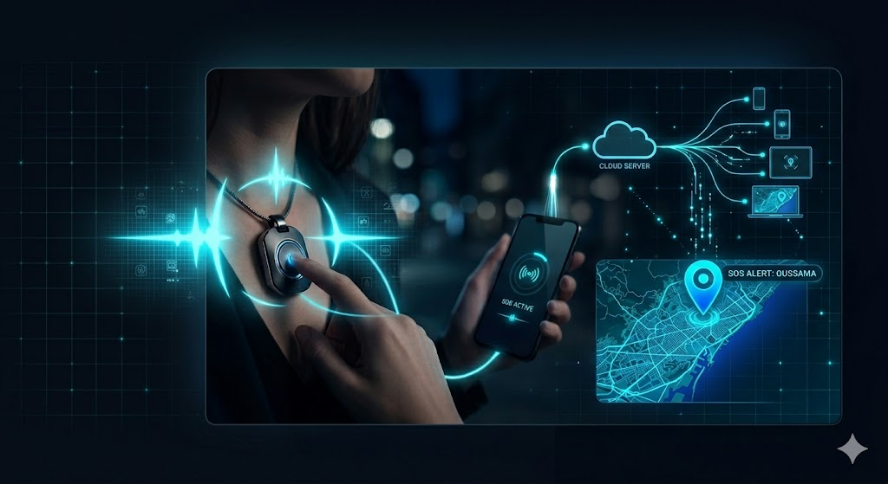

Un ecosistema complet dissenyat per actuar quan cada segon compta.
Connexió ràpida i estable fins a 10 metres. La tecnologia Bluetooth de baix consum garanteix que el SOS estigui sempre llest.
Processament en temps real mitjançant contenidors Docker i servidors segurs per a una resposta immediata.
Gràcies al protocol BLE, la bateria dura fins a 6 mesos en espera. Garanteix un funcionament operatiu i fiable per a qualsevol emergència sense necessitat de manteniment diari.
